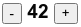

Посчитать максимум и минимум массива:
const arr = [1, 6, -1, 22, 13];
Перевернуть строку задом наперёд:
const str = "!тевирП";
Перевернуть введенную пользователем строку задом наперед.
Вычислить сумму квадратных корней для всех чётных чисел целочисленного массива:
const arr = [3, 5, 8, 13, 21, 42];
Написать функцию, которая проверяет, являются ли две строки анаграммой:
anagram("Лунь", "нуль") // true
anagram("Лунь", "ноль") // false
Написать функцию, которая проверяет, является ли строка палиндромом:
palindrome("Не гни папин ген") // true
palindrome("123") // false
Написать функцию, которая после вызова каждую секунду пишет в консоль очередное число Фибоначчи. Так, в консоли будет: 0, 1, 1, 2, 3, 5, 8, 13...
Написать функцию intersect(arrA, arrB), принимающую на вход два массива и возвращающую пересечение значений этих массивов.
Написать HTML и JS-код, который рисует кнопки "+" и "-" и значение, уменьшающееся или увеличивающееся при нажатии.
Что выведет этот код? Как сделать так, чтобы он вывел 1, 2, 3?
let i;
for(i = 1; i <= 3; i++) {
setTimeout(() => console.log(i), 1000);
}